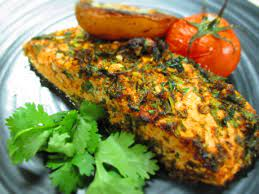

Salmon

Description
Simple and delicious recipe for a shabbat fish, Enjoy:-)
Ingredients
- Big uncut fillet salmon
- Soy suace
- Silan
- Dijon musterd
- Salt
Steps
- Mix the soy, silan, musterd and salt in a bowl
- put the salmon in an oven tray
- Spill the sauce on top of thew salmon
- Bake in an oven at 180 C* for 20 minutes
- Beteavon!